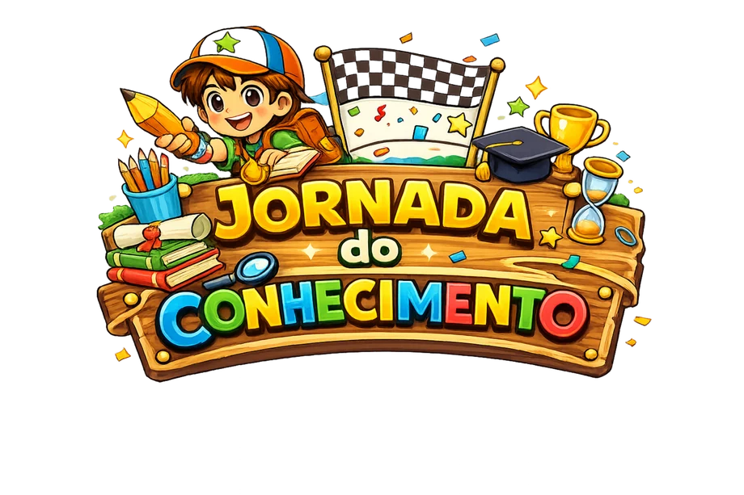
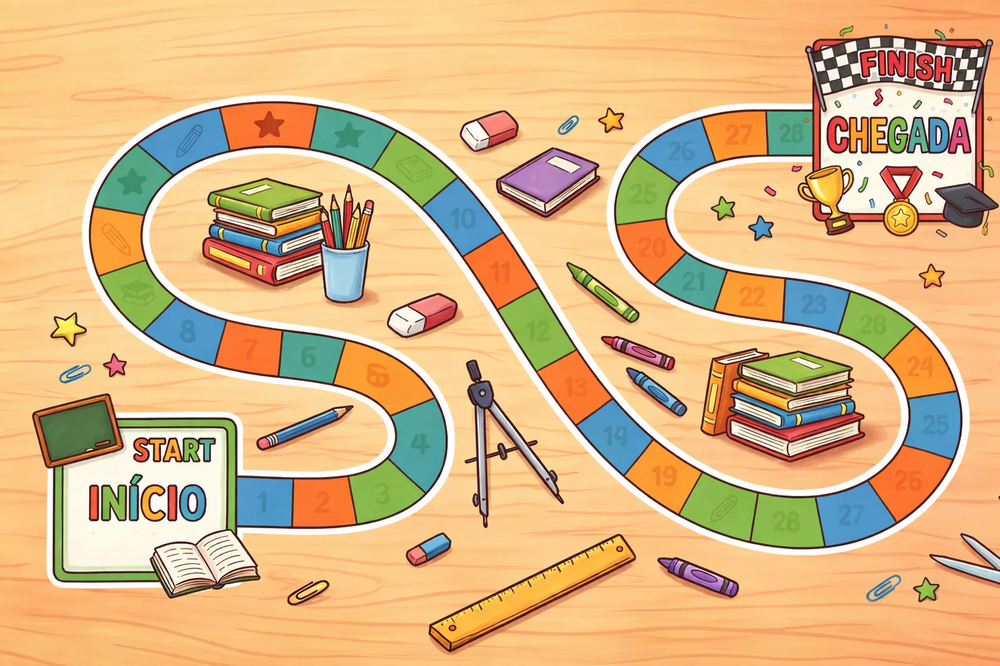
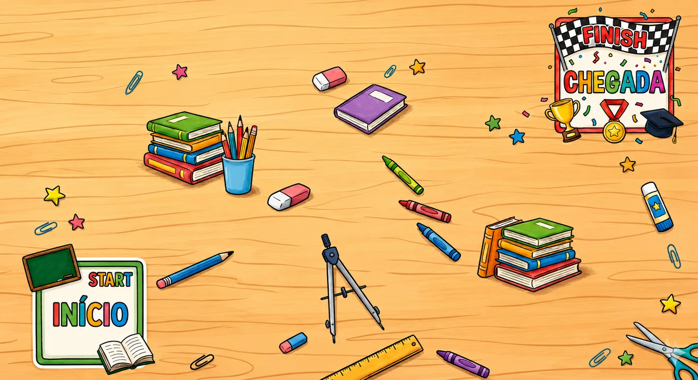
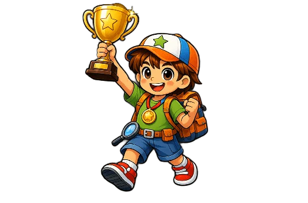

Desafio
Tornar atividades de estudo mais envolventes e facilitar a leitura do desempenho dos alunos por professores.

Jogo educacional • Godot • Beta v0.1.0
Jogo educacional em formato de tabuleiro digital, criado para tornar o aprendizado mais interativo e dar ao professor uma visão clara do desempenho dos alunos.

Visão geral
O Jornada do Conhecimento une dinâmica de jogo, conteúdo escolar e acompanhamento de desempenho em uma experiência pensada para alunos e professores.
Tornar atividades de estudo mais envolventes e facilitar a leitura do desempenho dos alunos por professores.
Um tabuleiro gamificado onde o aluno avança respondendo perguntas, acumula XP e recebe feedback ao longo da jornada.
O jogo combina fluxo do aluno, painel do professor, importação de perguntas, relatórios, API e uma primeira versão beta para teste.
Solução
O projeto foi pensado para conectar motivação no aprendizado com gestão de conteúdo e análise de evolução.

Identidade visual
A interface usa elementos escolares, cores de tabuleiro e feedbacks visuais para transformar conteúdo em progresso perceptível.

Processo
O usuário inicia escolhendo entre o fluxo do aluno e o fluxo do professor, cada um com telas e objetivos próprios.
O aluno rola o dado, avança pelas casas e segue uma progressão inspirada em desafios de aprendizagem.
Cada rodada apresenta perguntas com alternativas, dificuldade, pontuação, tempo limite e feedback de resposta.
O professor pode organizar perguntas, importar planilhas e acompanhar alunos por meio de painel administrativo.
A versão beta permite testar o fluxo principal, visualizar a proposta completa e acompanhar a evolução do projeto.
Apresentação
A apresentação reúne contexto, problema educacional, solução, funcionalidades, tecnologias, pesquisa e próximos passos do Jornada do Conhecimento.
Tecnologias
Seleção de perfil, tela inicial, carregamento, tabuleiro, perguntas e encerramento com resultado.
Acesso do professor, painel administrativo, banco de perguntas, dashboard, ranking e relatórios.
Importação de perguntas por planilha, alternativas, dificuldade, pontuação, tempo limite e resposta correta.
Resultado
O Jornada do Conhecimento já conta com uma primeira release para experimentar a dinâmica do tabuleiro, perguntas, pontuação e interação principal do jogador. A versão v0.1.0-beta está disponível para download pelo GitHub.